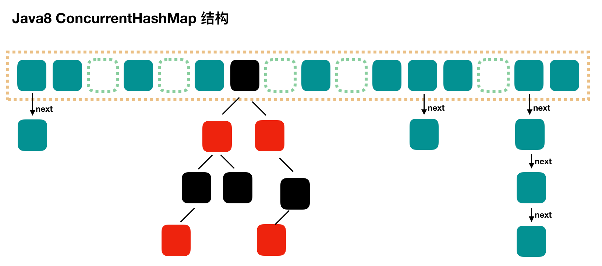

Java 集合¶
容器中的设计模式
回答
- 迭代器模式
- Collection 继承了 Iterable 接口，其中的 iterator() 方法能够产生一个 Iterator 对象，通过这个对象就可以迭代遍历 Collection 中的元素。
- 适配器模式
java.util.Arrays#asList()可以把数组类型转换为 List 类型。
ArrayList 与 Vector、LinkedList 区别
回答
- ArrayList 是 List 的主要实现类，底层使用
Object[ ]存储，支持随机访问，适用于频繁的查找工作，线程不安全 - Vector 是 List 的古老实现类，底层使用
Object[ ]存储，线程安全的 - LinkedList基于双向链表实现，只能顺序访问，但是可以快速地在链表中间插入和删除元素。不仅如此，LinkedList 还可以用作栈、队列和双向队列
说一说 ArrayList 的扩容机制吧
回答
- 添加元素时使用
ensureCapacityInternal()方法来保证容量足够，如果不够时，需要使用grow()方法进行扩容，新容量的大小为oldCapacity + (oldCapacity >> 1)，即oldCapacity+oldCapacity/2。其中 oldCapacity >> 1 需要取整，所以新容量大约是旧容量的 1.5 倍左右。（oldCapacity 为偶数就是 1.5 倍，为奇数就是 1.5 倍-0.5） - 扩容操作需要调用 Arrays.copyOf() 把原数组整个复制到新数组中，这个操作代价很高，因此最好在创建 ArrayList 对象时就指定大概的容量大小，减少扩容操作的次数
public boolean add(E e) { ensureCapacityInternal(size + 1); // Increments modCount!! elementData[size++] = e; return true; } private void ensureCapacityInternal(int minCapacity) { if (elementData == DEFAULTCAPACITY_EMPTY_ELEMENTDATA) { minCapacity = Math.max(DEFAULT_CAPACITY, minCapacity); } ensureExplicitCapacity(minCapacity); } private void ensureExplicitCapacity(int minCapacity) { modCount++; // overflow-conscious code if (minCapacity - elementData.length > 0) grow(minCapacity); } private void grow(int minCapacity) { // overflow-conscious code int oldCapacity = elementData.length; int newCapacity = oldCapacity + (oldCapacity >> 1); if (newCapacity - minCapacity < 0) newCapacity = minCapacity; if (newCapacity - MAX_ARRAY_SIZE > 0) newCapacity = hugeCapacity(minCapacity); // minCapacity is usually close to size, so this is a win: elementData = Arrays.copyOf(elementData, newCapacity); }
HashMap 和 Hashtable 的区别
回答
- 线程是否安全： HashMap 是非线程安全的，HashTable 是线程安全的,因为 HashTable 内部的方法基本都经过synchronized 修饰。
- 效率： 因为线程安全的问题，HashMap 要比 HashTable 效率高一点。另外，HashTable 基本被淘汰，不要在代码中使用它；
- 对 Null key 和 Null value 的支持： HashMap 可以存储 null 的 key 和 value，但 null 作为键只能有一个，null 作为值可以有多个；HashTable 不允许有 null 键和 null 值，否则会抛出 NullPointerException。
- 初始容量大小和每次扩充容量大小的不同 ： ① 创建时如果不指定容量初始值，Hashtable 默认的初始大小为 11，之后每次扩充，容量变为原来的 2n+1。HashMap 默认的初始化大小为 16。之后每次扩充，容量变为原来的 2 倍。② 创建时如果给定了容量初始值，那么 Hashtable 会直接使用你给定的大小，而 HashMap 会将其扩充为 2 的幂次方大小
- 底层数据结构： JDK1.8 以后的 HashMap 在解决哈希冲突时有了较大的变化，当链表长度大于阈值（默认为 8）（将链表转换成红黑树前会判断，如果当前数组的长度小于 64，那么会选择先进行数组扩容，而不是转换为红黑树）时，将链表转化为红黑树，以减少搜索时间。Hashtable 没有这样的机制。
HashMap 和 HashSet区别
回答
HashSet 底层就是基于 HashMap 实现的。（HashSet 的源码非常非常少，因为除了 clone()、writeObject()、readObject()是 HashSet 自己不得不实现之外，其他方法都是直接调用 HashMap 中的方法。
HashMap的底层实现
回答
- JDK1.8 之前
JDK1.8 之前
HashMap底层是 数组和链表 结合在一起使用也就是 链表散列。HashMap 通过 key 的 hashCode 经过扰动函数处理过后得到 hash 值，然后通过 (n - 1) & hash 判断当前元素存放的位置（这里的 n 指的是数组的长度），如果当前位置存在元素的话，就判断该元素与要存入的元素的 hash 值以及 key 是否相同，如果相同的话，直接覆盖，不相同就通过拉链法解决冲突。
所谓扰动函数指的就是 HashMap 的 hash 方法。使用 hash 方法也就是扰动函数是为了防止一些实现比较差的 hashCode() 方法 换句话说使用扰动函数之后可以减少碰撞。 JDK 1.8 HashMap 的 hash 方法源码:
JDK 1.8 的 hash 方法 相比于 JDK 1.7 hash 方法更加简化，但是原理不变。
static final int hash(Object key) {
int h;
// key.hashCode()：返回散列值也就是hashcode
// ^ ：按位异或
// >>>:无符号右移，忽略符号位，空位都以0补齐
return (key == null) ? 0 : (h = key.hashCode()) ^ (h >>> 16);
}
对比一下 JDK1.7 的 HashMap 的 hash 方法源码.
static int hash(int h) {
// This function ensures that hashCodes that differ only by
// constant multiples at each bit position have a bounded
// number of collisions (approximately 8 at default load factor).
h ^= (h >>> 20) ^ (h >>> 12);
return h ^ (h >>> 7) ^ (h >>> 4);
}
相比于 JDK1.8 的 hash 方法 ，JDK 1.7 的 hash 方法的性能会稍差一点点，因为毕竟扰动了 4 次。
所谓 “拉链法” 就是：将链表和数组相结合。也就是说创建一个链表数组，数组中每一格就是一个链表。若遇到哈希冲突，则将冲突的值加到链表中即可。

- JDK1.8 之后
相比于之前的版本， JDK1.8 之后在解决哈希冲突时有了较大的变化，当链表长度大于阈值（默认为 8）（将链表转换成红黑树前会判断，如果当前数组的长度小于 64，那么会选择先进行数组扩容，而不是转换为红黑树）时，将链表转化为红黑树，以减少搜索时间。

TreeMap、TreeSet 以及 JDK1.8 之后的 HashMap 底层都用到了红黑树。红黑树就是为了解决二叉查找树的缺陷，因为二叉查找树在某些情况下会退化成一个线性结构。
HashMap 的长度为什么是2的幂次方
回答
为了能让 HashMap 存取高效，尽量较少碰撞，也就是要尽量把数据分配均匀。我们上面也讲到了过了，Hash 值的范围值-2147483648到2147483647，前后加起来大概40亿的映射空间，只要哈希函数映射得比较均匀松散，一般应用是很难出现碰撞的。但问题是一个40亿长度的数组，内存是放不下的。所以这个散列值是不能直接拿来用的。用之前还要先做对数组的长度取模运算，得到的余数才能用来要存放的位置也就是对应的数组下标。这个数组下标的计算方法是“ (n - 1) & hash”。（n代表数组长度）。这也就解释了 HashMap 的长度为什么是2的幂次方。
这个算法应该如何设计呢？
我们首先可能会想到采用%取余的操作来实现。但是，重点来了：“取余(%)操作中如果除数是2的幂次则等价于与其除数减一的与(&)操作（也就是说 hash%length==hash&(length-1)的前提是 length 是2的 n 次方；）。” 并且 采用二进制位操作 &，相对于%能够提高运算效率，这就解释了 HashMap 的长度为什么是2的幂次方。
HashMap 多线程操作导致死循环问题
回答
主要原因在于 并发下的Rehash 会造成元素之间会形成一个循环链表。不过，jdk 1.8 后解决了这个问题，但是还是不建议在多线程下使用 HashMap,因为多线程下使用 HashMap 还是会存在其他问题比如数据丢失。并发环境下推荐使用 ConcurrentHashMap 。
说一下ConcurrentHashMap
回答
-
JDK1.8之前
一个 底层采用
底层采用 分段的数组+链表实现， 首先将数据分为一段一段的存储，然后给每一段数据配一把锁，当一个线程占用锁访问其中一个段数据时，其他段的数据也能被其他线程访问ConcurrentHashMap是由Segment数组结构和HashEntry数组结构组成。 Segment 实现了ReentrantLock,所以Segment是一种可重入锁，扮演锁的角色。HashEntry用于存储键值对数据。ConcurrentHashMap里包含一个Segment数组。Segment的结构和HashMap类似，是一种数组和链表结构，一个Segment包含一个HashEntry数组，每个HashEntry是一个链表结构的元素，每个Segment守护着一个HashEntry数组里的元素，当对HashEntry数组的数据进行修改时，必须首先获得对应的Segment的锁。 -
JDK1.8之后 
ConcurrentHashMap取消了Segment分段锁，采用 CAS 和synchronized来保证并发安全。数据结构跟 HashMap1.8 的结构类似，数组+链表/红黑二叉树。Java 8 在链表长度超过一定阈值（8）时将链表（寻址时间复杂度为 O(N)）转换为红黑树（寻址时间复杂度为 O(log(N))）synchronized只锁定当前链表或红黑二叉树的首节点，这样只要 hash 不冲突，就不会产生并发，效率又提升 N 倍（JDK1.6 以后 对 synchronized 锁做了很多优化） 。
{kind=link}
说一下WeakHashMap
回答
-
原理： WeakHashMap 的 Entry 继承自 WeakReference，被 WeakReference 关联的对象在下一次垃圾回收时会被回收。
-
作用： WeakHashMap 主要用来实现缓存，通过使用 WeakHashMap 来引用缓存对象，由 JVM 对这部分缓存进行回收。
-
Entry的Value是否会导致内存泄漏：WeakHashMap会在在访问内容（
put,get）的时候释放内部不用的对象（实则是通过访问调用了它的expungeStaleEntries函数）private void expungeStaleEntries() { for (Object x; (x = queue.poll()) != null; ) { synchronized (queue) { @SuppressWarnings("unchecked") Entry<K,V> e = (Entry<K,V>) x; int i = indexFor(e.hash, table.length); Entry<K,V> prev = table[i]; Entry<K,V> p = prev; while (p != null) { Entry<K,V> next = p.next; if (p == e) { if (prev == e) table[i] = next; else prev.next = next; // Must not null out e.next; // stale entries may be in use by a HashIterator e.value = null; // Help GC size--; break; } prev = p; p = next; } } } }
说一下LinkedHashMap
回答
- 继承自 HashMap，因此具有和 HashMap 一样的快速查找特性。
- 内部维护了一个双向链表，用来维护插入顺序或者 LRU 顺序。
- 当维护 LRU 顺序时可以实现LRU缓存
- 当一个节点被访问时，通过
afterNodeAccess方法保证在每次访问一个节点时，会将这个节点移到链表尾部，保证链表尾部是最近访问的节点，那么链表首部就是最近最久未使用的节点。 afterNodeInsertion在 put 等操作之后执行，当removeEldestEntry()方法返回 true 时会移除最晚的节点，也就是链表首部节点 first
- 当一个节点被访问时，通过
- LRU 示例
说一下CopyOnWriteArrayList
回答
- 读写分离 写操作在一个复制的数组上进行，读操作还是在原始数组中进行，读写分离，互不影响。 写操作需要加锁，防止并发写入时导致写入数据丢失。 写操作结束之后需要把原始数组指向新的复制数组。
- 适用场景
CopyOnWriteArrayList 在写操作的同时允许读操作，大大提高了读操作的性能，因此很适合读多写少的应用场景。
但是 CopyOnWriteArrayList 有其缺陷：
- 内存占用：在写操作时需要复制一个新的数组，使得内存占用为原来的两倍左右；
- 数据不一致：读操作不能读取实时性的数据，因为部分写操作的数据还未同步到读数组中。
所以 CopyOnWriteArrayList 不适合内存敏感以及对实时性要求很高的场景。
说一下CopyOnWriteArrayList和读写锁区别
回答
- 相同点：1. 两者都是通过读写分离的思想实现；2.读线程间是互不阻塞的
- 不同点：对读写锁而言，为了实现数据实时性，在写锁被获取后，读线程会等待或者当读锁被获取后，写线程会等待，从而解决“脏读”等问题。也就是说如果使用读写锁依然会出现读线程阻塞等待的情况。而 COW 则完全放开了牺牲数据实时性而保证数据最终一致性，即读线程对数据的更新是延时感知的，因此读线程不会存在等待的情况。
比较 HashSet、LinkedHashSet 和 TreeSet 三者的异同
回答
- TreeSet：基于红黑树实现，支持有序性操作，例如根据一个范围查找元素的操作。但是查找效率不如 HashSet，HashSet 查找的时间复杂度为 O(1)，TreeSet 则为 O(logN)。
- HashSet：基于哈希表实现，支持快速查找，但不支持有序性操作。并且失去了元素的插入顺序信息，也就是说使用 Iterator 遍历 HashSet 得到的结果是不确定的。
- LinkedHashSet：具有 HashSet 的查找效率，并且内部使用双向链表维护元素的插入顺序。
说一下ThreadLocal
回答
- 使用
通常情况下，我们创建的变量是可以被任何一个线程访问并修改的。如果想实现每一个线程都有自己的专属本地变量该如何解决呢？ JDK 中提供的ThreadLocal类正是为了解决这样的问题。 ThreadLocal类主要解决的就是让每个线程绑定自己的值，可以将ThreadLocal类形象的比喻成存放数据的盒子，盒子中可以存储每个线程的私有数据。
ThreadLocal 不是用来解决共享对象的多线程访问问题的，数据实质上是放在每个 thread 实例引用的 threadLocalMap,也就是说**每个不同的线程都拥有专属于自己的数据容器（threadLocalMap），彼此不影响**。因此 threadLocal 只适用于 共享对象会造成线程安全 的业务场景。
- 实现原理
我们先从最基本的get()方法说起：
public T get() {
//获得当前线程
Thread t = Thread.currentThread();
//每个线程 都有一个自己的ThreadLocalMap，
//ThreadLocalMap里就保存着所有的ThreadLocal变量
ThreadLocalMap map = getMap(t);
if (map != null) {
//ThreadLocalMap的key就是当前ThreadLocal对象实例，
//多个ThreadLocal变量都是放在这个map中的
ThreadLocalMap.Entry e = map.getEntry(this);
if (e != null) {
@SuppressWarnings("unchecked")
//从map里取出来的值就是我们需要的这个ThreadLocal变量
T result = (T)e.value;
return result;
}
}
// 如果map没有初始化，那么在这里初始化一下
return setInitialValue();
}
ThreadLocalMap，而 ThreadLocalMap可以存储以ThreadLocal为 key ，Object 对象为 value 的键值对
- 内存泄漏问题
ThreadLocal.ThreadLocalMap是一个比较特殊的Map，它的每个Entry的key都是一个弱引用：
static class Entry extends WeakReference<ThreadLocal<?>> {
/** The value associated with this ThreadLocal. */
Object value;
//key就是一个弱引用
Entry(ThreadLocal<?> k, Object v) {
super(k);
value = v;
}
}
这样设计的好处是，如果这个变量不再被其他对象使用时，可以自动回收这个ThreadLocal对象，避免可能的内存泄露。
虽然ThreadLocalMap中的key是弱引用，当不存在外部强引用的时候，就会自动被回收，但是Entry中的value依然是强引用。
这样一来，ThreadLocalMap 中就会出现 key 为 null 的 Entry。假如我们不做任何措施的话，value 永远无法被 GC 回收，这个时候就可能会产生内存泄露。ThreadLocalMap 实现中已经考虑了这种情况，在调用 set()、get()、remove() 方法的时候，会清理掉 key 为 null 的记录。
以getEntry()为例：
private Entry getEntry(ThreadLocal<?> key) {
int i = key.threadLocalHashCode & (table.length - 1);
Entry e = table[i];
if (e != null && e.get() == key)
//如果找到key，直接返回
return e;
else
//如果找不到，就会尝试清理，如果你总是访问存在的key，那么这个清理永远不会进来
return getEntryAfterMiss(key, i, e);
}
下面是getEntryAfterMiss()的实现：
private Entry getEntryAfterMiss(ThreadLocal<?> key, int i, Entry e) {
Entry[] tab = table;
int len = tab.length;
while (e != null) {
// 整个e是entry ，也就是一个弱引用
ThreadLocal<?> k = e.get();
//如果找到了，就返回
if (k == key)
return e;
if (k == null)
//如果key为null，说明弱引用已经被回收了
//那么就要在这里回收里面的value了
expungeStaleEntry(i);
else
//如果key不是要找的那个，那说明有hash冲突，这里是处理冲突，找下一个entry
i = nextIndex(i, len);
e = tab[i];
}
return null;
}
真正用来回收value的是expungeStaleEntry()方法，在remove()和set()方法中，都会直接或者间接调用到这个方法进行value的清理：
从这里可以看到，ThreadLocal为了避免内存泄露，也算是花了一番大心思。不仅使用了弱引用维护key，还会在每个操作上检查key是否被回收，进而再回收value。
但是从中也可以看到，ThreadLocal并不能100%保证不发生内存泄漏。
比如，很不幸的，你的get()方法总是访问固定几个一直存在的ThreadLocal，那么清理动作就不会执行，如果你没有机会调用set()和remove()，那么这个内存泄漏依然会发生。
因此，一个良好的习惯依然是：当你不需要这个ThreadLocal变量时，主动调用remove()，这样对整个系统是有好处的。
- Hash冲突处理
ThreadLocalMap作为一个HashMap和java.util.HashMap的实现是不同的。对于java.util.HashMap使用的是链表法来处理冲突：
但是，对于ThreadLocalMap，它使用的是简单的线性探测法，如果发生了元素冲突，那么就使用下一个槽位存放：
之所以采用不同的方式主要是因为：在 ThreadLocalMap 中的散列值分散的十分均匀，很少会出现冲突。并且 ThreadLocalMap 经常需要清除无用的对象，使用纯数组更加方便。